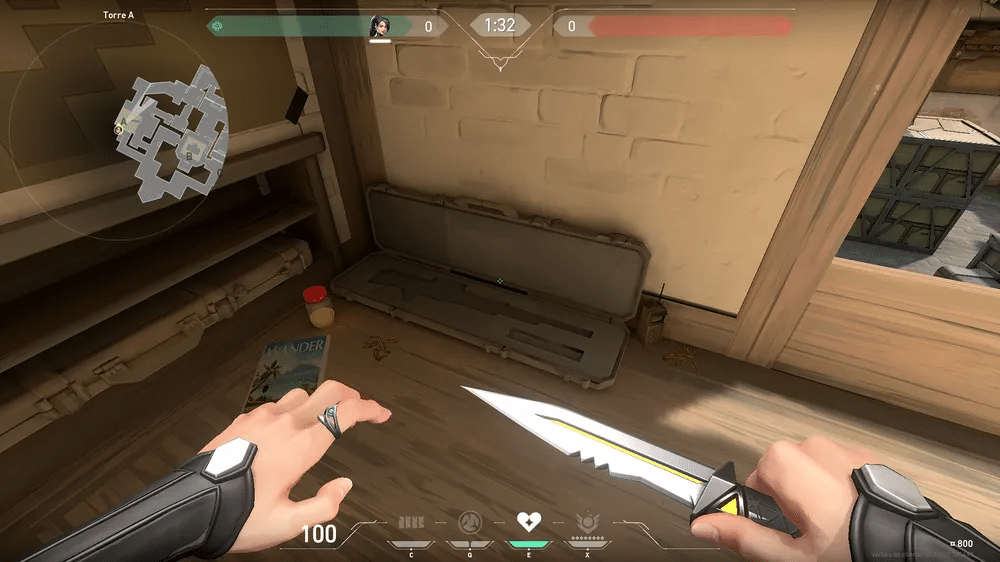
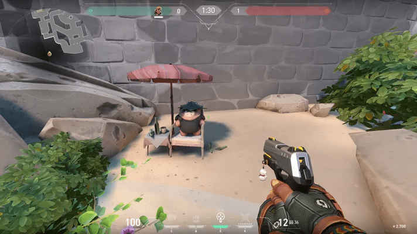
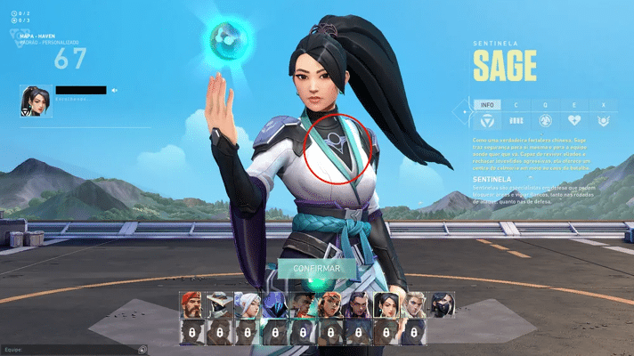
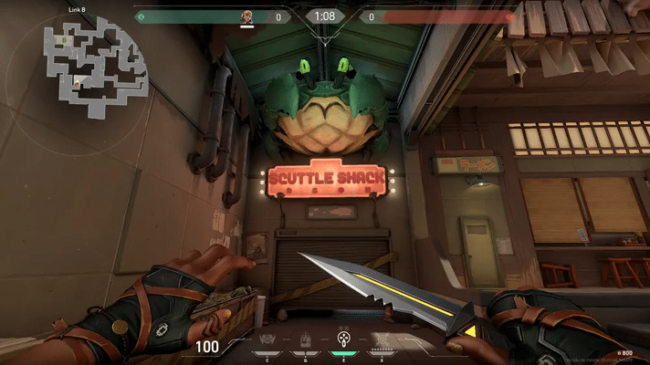
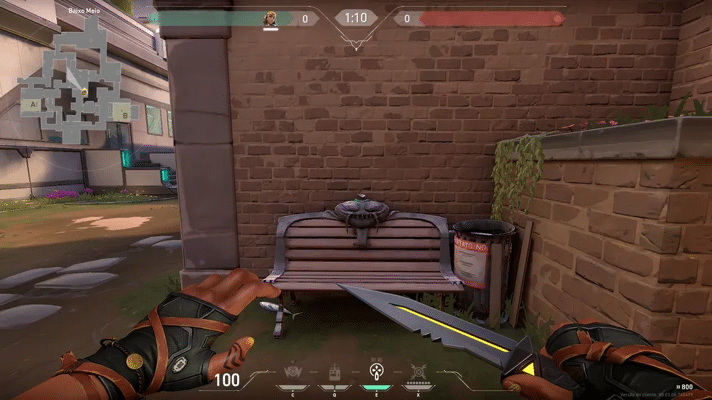

O valorant está cheio de "easter eggs" de diferentes
jogos e ainda tem histórias por trás delas.
Aqui temos 6 "easter eggs" da valorant:
Sage e Shurima:
A personagem Sage em Valorant ostenta um símbolo em sua
vestimenta que parece ser uma homenagem a Shurima, uma região
importante no universo de League of Legends. Shurima é conhecida
por ser o lar de campeões emblemáticos como Azir, Sivir, Nasus,
Renekton e Xerath.
Referências do Legends of Runeterra (LoR): O jogo de cartas da
Riot Games expande a história de Shurima através de cartas como
o "Disco Solar Soterrado", evidenciando o desejo do campeão Azir
de restaurar a glória de seu lar. Cartas do LoR oferecem
insights sobre a mitologia, campeões e elementos de Shurima.
Tahm Kench em Ascent
: No mapa Ascent, um banco com o rosto de Tahm Kench, o "Rei do
Rio", é uma referência marcante. Conhecido como "TK" pelos
jogadores de League of Legends, Tahm Kench é um campeão que
normalmente atua como suporte na rota inferior
Ursos de pelúcia e brinquedos:
Esses elementos estão espalhados pelos mapas de Valorant, alguns
visíveis apenas no modo "fantasma". Além dos ursos de pelúcia,
há referências a outros brinquedos, como coalas armados no mapa
Breeze, pinguins, bonecos de neve em Icebox, esquilos e cobras
em diferentes cenários.
Aronguejo do League of Legends em Split:
No mapa Split, há uma referência ao Aronguejo, uma criatura
inofensiva do League of Legends encontrada nos rios da selva de
Summoner's Rift. Eliminá-lo no LoL traz benefícios aos
caçadores, concedendo visão temporária, ouro e experiência.
Homenagem a Team Fortress 2 em Haven:
No mapa Haven, há uma caixa que remete ao jogo Team Fortress 2.
Ela contém um item semelhante ao Jarratê usado pelo Sniper no
TF2, uma arma que pode revelar espiões, causar dano e até apagar
o fogo de aliados.





Valorant é um jogo de tiro online em primeira pessoa no
qual dois grupos de cinco pessoas se enfrentam em batalhas em
arenas. A cada partida, os jogadores devem concluir as missões
do time ou impedir que os adversários completem os próprios
objetivos.
O estilo é bem parecido com CS:GO mas as personagens tem
habilidades que a faz parecer também com overwatch, mesmo sendo
parecido com dois jogos de tiros, o valorant virou um dos jogos
mais jogados do ano, tendo muita popularidade em muitos países e
na mídia, como youtube, tiktok, twitch, etc.